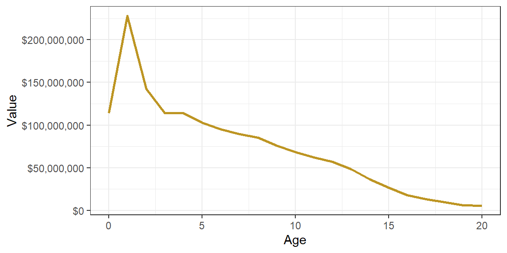
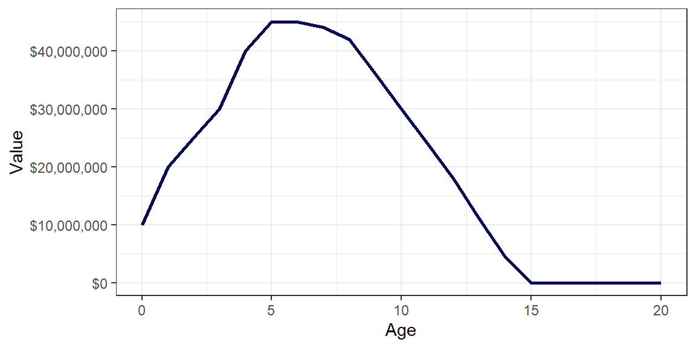
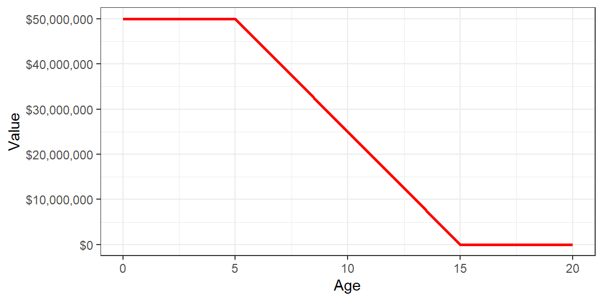
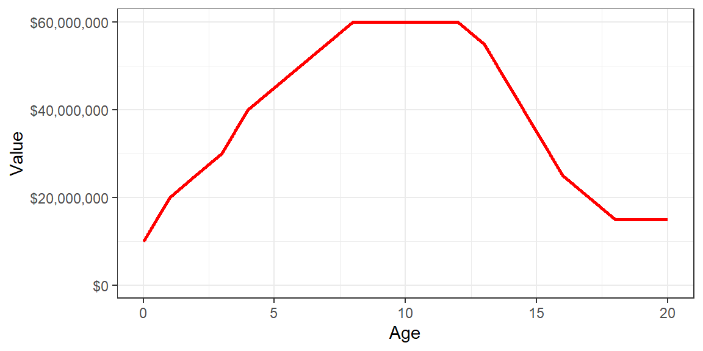
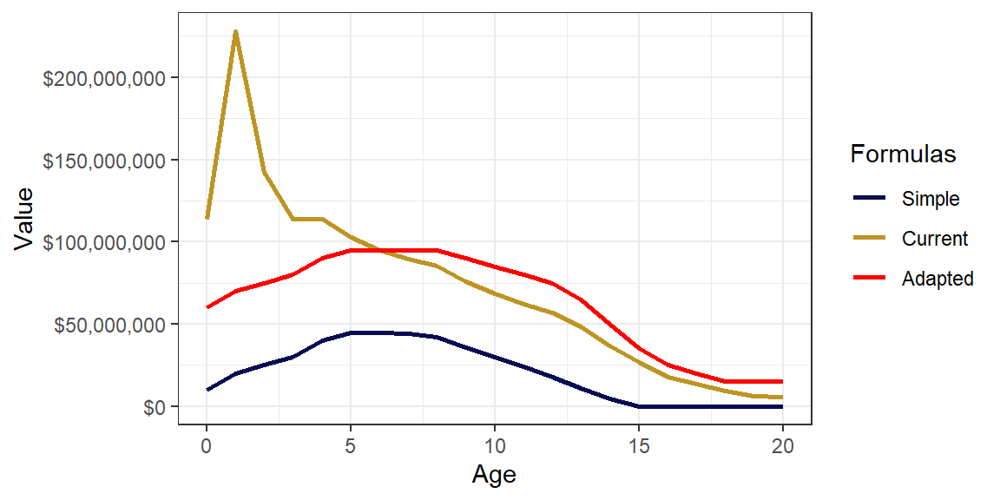
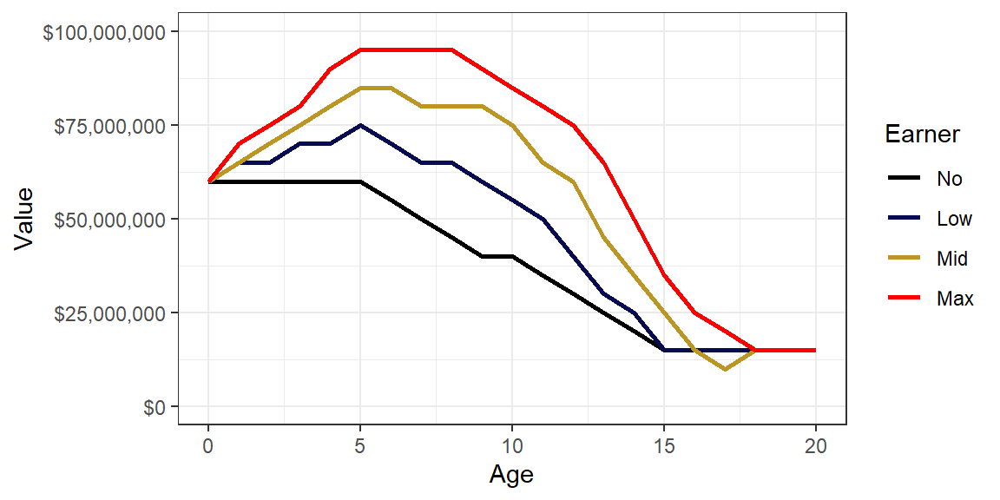

| Age | TPE | Seasons Above 1.2k |
|---|---|---|
| 0 | 350 | 10 |
| 1 | 550 | 10 |
| 2 | 738 | 10 |
| 3 | 926 | 10 |
| 4 | 1114 | 10 |
| 5 | 1300 | 10 |
| 6 | 1496 | 9 |
| 7 | 1674 | 8 |
| 8 | 1850 | 7 |
| 9 | 2036 | 6 |
| 10 | 2000 | 5 |
| 11 | 1933 | 4 |
| 12 | 1784 | 3 |
| 13 | 1560 | 2 |
| 14 | 1295 | 1 |
| 15 | 1010 | 0 |
| 16 | 705 | 0 |
| 17 | 512 | 0 |
| 18 | 396 | 0 |
| 19 | 337 | 0 |
| 20 | 291 | 0 |
New Transfer Value
Proposal for a new Transfer Value Calculation
We have an issue with the current transfer value calculation in that it does not properly take into account the Academy season we have added, resulting in max earning players having a value of over 100 million past their third season and cannot sign elsewhere in FA. The current system also has a relatively reduced cost of a max earner in their peak.
I want to find a new valuation formula that is both simple and gives a decent valuation of a player in all different eras of their career.
Variables
First I looked at a way to gauge potential and decided to look at a max earner and count the number of seasons remaining that they could be over 1.2k TPE. For instance a S0 player would have 10 seasons at potentially over 1.2k, reaching it for the first time in S5 and having its last season in S14.
Then I wanted a way to use the current TPE value of the player, as potential only shows something uncertain. We already have the minimum salary based on TPE tiers, so that was a given to use again. An S0 player starts off at 1 million and is earning 6 million in S8.
| Age | TPE | Salary |
|---|---|---|
| 0 | 350 | $1,000,000 |
| 1 | 550 | $2,000,000 |
| 2 | 738 | $2,500,000 |
| 3 | 926 | $3,000,000 |
| 4 | 1114 | $4,000,000 |
| 5 | 1300 | $4,500,000 |
| 6 | 1496 | $5,000,000 |
| 7 | 1674 | $5,500,000 |
| 8 | 1850 | $6,000,000 |
| 9 | 2036 | $6,000,000 |
| 10 | 2000 | $6,000,000 |
| 11 | 1933 | $6,000,000 |
| 12 | 1784 | $6,000,000 |
| 13 | 1560 | $5,500,000 |
| 14 | 1295 | $4,500,000 |
| 15 | 1010 | $3,500,000 |
| 16 | 705 | $2,500,000 |
| 17 | 512 | $2,000,000 |
| 18 | 396 | $1,500,000 |
| 19 | 337 | $1,500,000 |
| 20 | 291 | $1,500,000 |
Valuation formula
So now to find a way to combine these two values, current and potential value.
- An S0 player would have low value but high potential,
- a peak player (S7-S12) would have high value and mid potential,
- A regressing player (S10+) would have mid-high value and low potential.
The current formula is shown below:

Using a minimalistic formula of Minimum Salary * Potential we get the following graph of a steady rise until S5 and a significant drop when reaching S8. This is in my opinion too quick (and not in the proper range).

Splitting up the two variables could also produce a minimalistic formula. For instance considering the base transfer value of the player being 5*Potential million, a S0 player would only based on potential be worth $50 million.

The 10 * minimum salary of the player (assuming max earning) follows a curved trend with the player’s age.

Combining these two trends over time according to 5*Potential million + 10*Salary would create a transfer value indicated by the red line.

When comparing this to the most simplistic and the current valuation formula we see that the lowest valuation of a player is $60 million, increasing to just under $100 million in S5 and finally reducing more slowly than the simple formula.
Projections
If we were to take this formula and look at four types of earners:
- No: Nothing earned at all.
- Low: Earning at 33% a season, corresponding to around 3/12 capped TPE and no uncapped TPE.
- Mid: Earning at 66% a season, corresponding to around 8/12 capped TPE and some uncapped TPE.
- Max: Earning everything.
